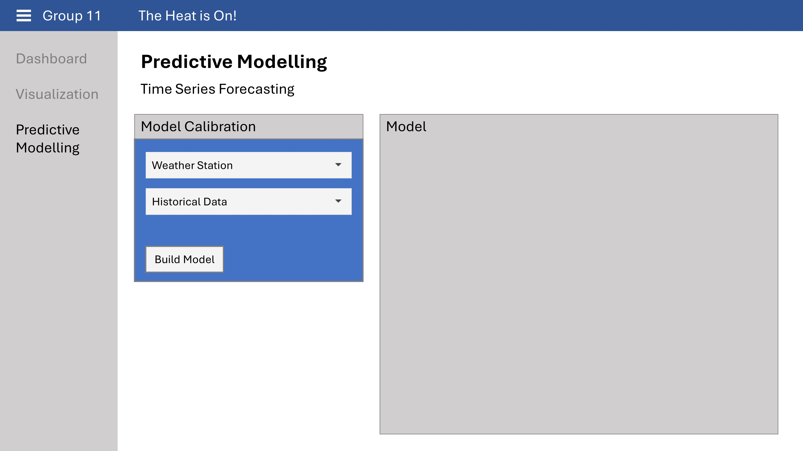

Project Proposal

1. Introduction
In our efforts to combat the adverse effects of climate change, particularly on island nations like Singapore, Prime Minister Lee Hsien Loong has committed to concerted international efforts to mitigate this global challenge. At the United Nations Climate Ambition Summit on 12 December 2020, he emphasized, “Climate change is an existential threat for all of us, but especially for a small island state like Singapore. … Singapore will do our part, together with other countries, to address climate change.”
Scientific evidence supports the urgency of this commitment. A joint study by the Meteorological Service Singapore’s (MSS) Centre for Climate Research Singapore (CCRS) and the UK Met Office contextualised the findings of the Intergovernmental Panel on Climate Change’s Sixth Assessment Report 1. It revealed that mean temperatures rose at an average rate of 0.25°C per decade and that daily mean temperatures are projected to increase between 1.4°C to 4.6°C by the end of 21st Century. 2.
The implications for sea-level rise are profound., From 1975 to 2009, the sea level in the Straits of Singapore rose at the rate of 1.2 mm to 1.7 mm per year and is projected to increase by about 1 meter by 2100 3. The repercussions are dire for Singapore as a low-lying state; its vulnerability to the effects of climate change cannot be undermined 4.
In response, Singapore is prepared to invest significantly, at least S$100 billion over the next 100 years in engineering solutions to protect Singapore’s coastlines from rising sea levels. This proactive stance reflects a deep understanding of the looming threats and a resolve to protect the nation’s future.
2. Project Objectives
The motivation of the project is to maximise the potential of publicly available data through the exploration of the impact of climate change on Singapore and how it threatens Singapore’s existence. This is of grave concern to all Singaporeans with a stake in the country. The main objectives of the project can be broken down into the following areas:
Create clear and easy-to-understand visualisations of past trends to increase the public’s awareness
Model and predict future trends to assist the government’s efforts using historical data.
To meet the the objectives of increasing public awareness and assisting the government’s efforts on the impact of climate change, a public webpage equipped with data visualisation and interactive applications will be developed for members of the public to gain clear insights into Singapore’s weather trends. The overall outcomes of the project are:
Educate through interactive data visualisations where the webpage will include a dashboard featuring a variety of visualisations that depict pas climate data and trends. Interactive parameters allow the users to select different time periods or types of data to visualize.
Engage users with interactive predictive models through sliders and input fields to simulate different environmental variables and visualize the outcomes of different actions taken today on future climate conditions.
Facilitate knowledge sharing and community involvement by implementing a forum or discussion board where the public users can discuss climate issues and propose solutions.
3. Data
The dataset used in this study is prepared and maintained by the Meteorological Service Singapore (MSS). The MSS collects rainfall, temperature, and wind speed data from available weather stations since 1980. However, a quick scan of the MSS Historical Daily Records site shows that not all weather stations recorded all data types from 1980. This is because manual observations were replaced with automated instruments from 20095.
This means that there are some gaps in the data set:
37 out of the 63 weather stations only recorded rainfall data starting between 2009 and 2011.
41 out of the 63 weather stations do not record temperature data, even up to now.
Out of the 22 weather stations that record temperature data, only three stations recorded data from the 1980s (from 1982 in Changi and from 1986 in Tengah and Paya Lebar).
For this project, we will analyse the historical temperature and rainfall data collected by MSS based on the 22 weather stations (Table 1).
The selected stations with complete datasets from 1980 onwards provide a long-term perspective on climate trends, which is crucial for accurate modelling and prediction. Automated instruments from 2009 enhance data reliability and allow for continuous monitoring without manual intervention gaps.

Table 1 presents the overview of the meteorological data recording periods across 22 selected weather stations in Singapore.
The selected stations are well-distributed across Singapore’s geography, covering coastal areas, inland locations and urban centers (Figure 1). This distribution ensures that the stations capture various microclimates within the country.

Figure 1 juxtaposes two maps of Singapore to contrast the distribution of weather stations across the island displaying 63 stations (left) and 22 selected stations (right).
4. Methodology and Analysis
4.1. Exploratory Data Analysis and Visualizations
Firstly, our exploratory data analysis will uncover trends in Singapore’s historical climate data through a range of visualizations to convey our finding effectively:
Time series analysis utilizes time-dependent decomposition to discern the variations, trends and anomalies in the climate data across the periods
Comparative analysis using box plots and violin plots to highlight the differences in climate data across periods or locations • Heatmap to plot changes in climate data by periods
Distribution analysis through ridgeline plots to show the distribution of climate data by specific periods or locations
Correlation matrix between climate data to investigate the inter dependencies between the climate data
Interactive maps to show geographical impacts of climate change, such as potential flooding areas and urban heat issues.
The visualizations will be created using R packages;ggplot2 for foundational graphics, extensions such as ggridges for ridgeline plots, ggthemes and patchwork for styling and layouts. Interactive graphics will be incorporated using ggiraph and plotly and the animations produced via gganimate.
Interactivity can be included in the visualizations, such as coordinated multiple views to show temperature and rainfall data side-by-side. Animations can be used to showcase changes in temperature and rainfall over the years.
4.2. Predictive Model
We aim to forecast future climate trends by exploring a suite of time series forecasting models:
Time series forecasting is the process of using historical data to predict future values of a variable that changes over time. It is a common and useful technique for weather prediction. There are many types of models for time series forecasting, such as exponential smoothing, ARIMA, SARIMA, VAR and neural networks.
Machine learning approaches, such as Random Forest and Gradient Boosting Machines, for non-linear trend capturing.
We will compare and evaluate different models based on their predictive performance in terms of accuracy, precision and recall using evaluation metrics such as cross-validation, AIC and BIC, and forecasting accuracy measures using RMSE. The interpretability of models will also be a key consideration to ensure that the findings are understandable to the public (Figure 2).
Figure 2 is a prototype of RShiny application.
5. Scope of Work
The project will begin with an initial planning and research phase where a comprehensive literature review will be conducted to understand existing climate models and their applicability to Singapore.
In the data collection and preprocessing stage, historical climate data will be gathered from reliable sources. This data will undergo rigorous cleaning and preprocessing to prepare it for analysis. Exploratory data analysis will then be carried out to detect patterns, trends, and outliers within the data, with preliminary visualizations developed to summarize these findings.
The core of the project will involve developing and validating predictive models using various statistical and machine learning techniques. These models will be evaluated and refined based on their performance metrics to ensure accuracy and reliability. The project will culminate in a final analysis based on the predictive models to inform the public. Upon completion, all project deliverables will be finalized, and a project closure phase will ensure all data and documentation are archived, and training is provided for the use of the developed tools.
Finally, the project will outline a strategy for ongoing monitoring of climate data and regular updates to the models. This will also identify opportunities for further research to enhance predictive capabilities and the overall user experience of the developed tools.

Figure 3 is the time management Gantt chart of this project.
6. Conclusion
This project aims to create an interactive platform on an RShiny app to visualize historical climate trends and forecast future patterns of Singapore’s temperature and rainfall. This application serves as an dynamic educational tool to help raise awareness on the urgency of climate change and inspire individuals and organisations to make incremental lifestyle changes and adopt sustainable practices that align with the objectives Singapore Green Plan 2030. By facilitating a deeper understanding of environmental changes through accessible data visualizations and predictive modelling, the project seeks to foster a proactive approach to environmental stewardship within the community.
Footnotes
https://www.ipcc.ch/report/ar6/syr/downloads/report/IPCC_AR6_SYR_SPM.pdf↩︎
https://www.nccs.gov.sg/singapores-climate-action/impact-of-climate-change-in-singapore/↩︎
https://www.mse.gov.sg/policies/climate-change#:~:text=Understanding%20Climate%20Change&text=A%20warmer%20climate%20leads%20to,more%20frequent%20extreme%20weather%20events.↩︎
https://www.todayonline.com/singapore/explainer-why-climate-change-should-matter-singaporeans-and-what-government-doing-about-it↩︎
http://www.weather.gov.sg/wp-content/uploads/2022/06/Station_Records.pdf↩︎